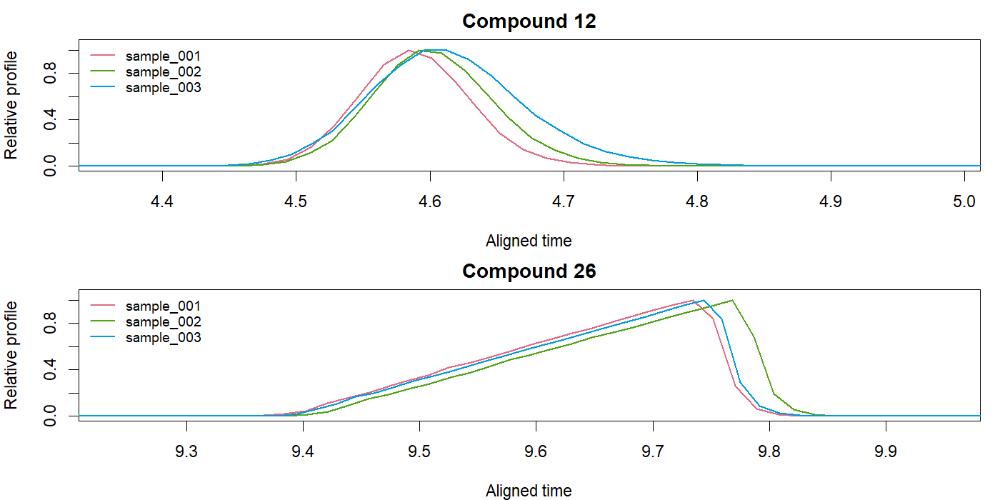
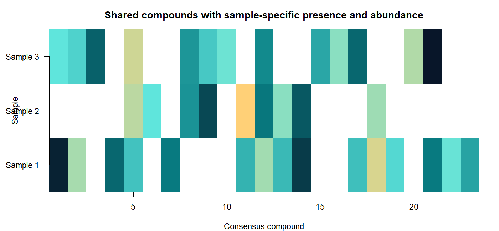
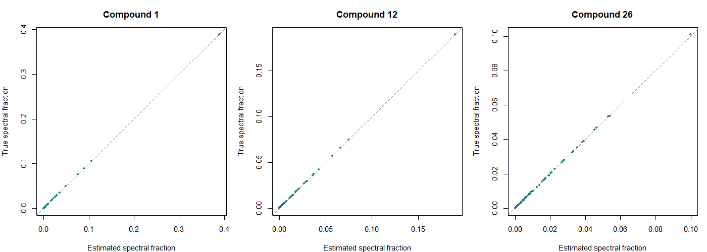
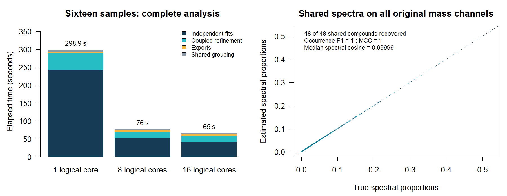
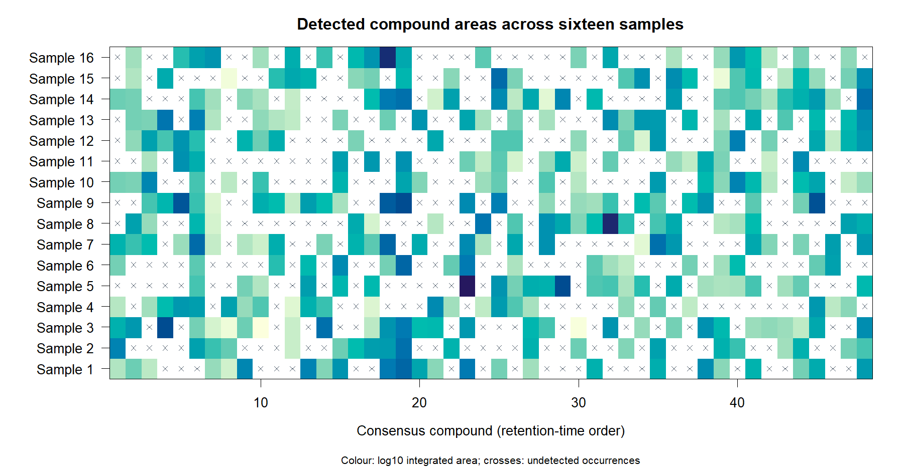

Coupled multisample log-concave NMF with automatic best rank tuning
Source:vignettes/articles/coupled-nmf.Rmd
coupled-nmf.RmdcoupledNMF() combines related multichannel samples into
a common spectral library while fitting each sample’s own compound
areas, peak shapes and smooth background. Samples retain their measured
time grids. The model accommodates retention-time drift,
concentration-dependent widths and tails, and compounds that occur in
only some samples.
fit <- coupledNMF(samples, family=quasipoisson("identity"), precluster=32L)
fit$areas # samples x consensus compounds
coef(fit, normalize="l1") # common spectra
fitted(fit, sample=1L) # original-grid fitted signal
sampleNMF(fit, sample=1L) # standard per-sample NMF object
GIC(fit)Each sample description contains y, time,
and either a candidate PSF matrix X or an independent
splogconNMF() fit. Matrices can be supplied through RDS
paths. Observations, factors, weights and offsets are stored per sample.
Workers process independent samples concurrently and read original ions
in blocks during coupled refinement. Common spectra and compact
alignment summaries are shared in memory.
Three samples, shared spectra and different peak shapes
The simulator provides exponentially modified Gaussian peaks, broad
triangular acid profiles, smooth backgrounds and irregular scan
intervals. Peak width, tailing and retention time can depend on
concentration and position in the chromatogram.
presence=0.5 makes compounds absent independently in half
of the samples on average.
sim <- simulate_GCMS_samples(samples=3L, n=c(580L,600L,620L), k=26L,
preset="time_area_acid", presence=0.5, seed=811)
samples <- lapply(sim$samples, function(s) list(
y=s$Y, time=s$time, edges=s$edges, exposure=s$raw_exposure,
sample_id=s$sample_id,
X=convmatrix(dnorm(-8:8, sd=1.6), nrow(s$Y)),
background=splines::bs(s$time, df=4L, intercept=TRUE)))
fit <- coupledNMF(samples, family=poisson("identity"), ncores=8L,
control=list(initial=list(profile_cycles=4L, fusion_passes=2L)))
fit$areas
plot(fit, type="profiles", compounds=c(1L,12L))The three-sample validation retains all 258 mass
channels. With every compound present, it recovers 26
shared compounds and all 78 occurrences. With
presence=0.5, the realized data contain 23 shared
compounds and 37 occurrences, all recovered. Missing
occurrences remain NA in the area table.
| Simulation | True shared compounds | Recovered | True occurrences | Recovered | Total time |
|---|---|---|---|---|---|
| All compounds present | 26 | 26 | 78 | 78 | 29.69 s |
| 50% presence probability | 23 | 23 | 37 | 37 | 21.92 s |
These elapsed times include independent initialization, alignment, grouping and coupled refinement on an eight-core Intel i9-11950H workstation. Both examples include different scan grids and concentration-dependent peak shapes.


Shared spectra are estimated from all detected occurrences of a compound:

Sixteen samples with parallel fitting
A 16-sample simulation has 1,200 scans and 258 ion channels per sample, 48 shared compounds and 380 true occurrences. Peak widths and tails vary with concentration and retention time. A common 32-group map accelerates initialization and matching, and each spectrum is estimated on all 258 ions.
The complete CDF-to-results workflow via GCMSprime took 65.05 s with 16 single-threaded sample workers on an Intel Core i9-11950H (8 physical and 16 logical cores), compared with 75.97 s with eight workers and 298.94 s with one. All core budgets recovered the same 48 compounds and 380 occurrences (F1 = 1, MCC = 1), with median spectral cosine 0.999994 and joint GIC 9,832,385.06.


Original scan grids, shared spectra and missing compounds
Each sample retains its measured time grid, background and noise parameters. Monotone alignment changes profile coordinates and bin widths; observations are evaluated directly without resampling. Each detected occurrence has its own log-concave shape and amplitude, while its spectrum is shared.
The joint criterion counts one unit-sum spectrum per consensus component and one amplitude per detected occurrence. Profile and background complexity are unpenalized. Original-channel likelihood checks decide whether a complete grouped/refined candidate is retained.
fit$areas
fit$compounds
fit$alignment
single <- sampleNMF(fit, sample=1L)
dim(single$H)
dim(coef(single))
plot(fit, type="areas")An absent occurrence stays NA; this model does not fill
undetected compounds. The coupled
model and algorithm give the exact likelihood, Jacobian,
normalization, pooled spectral updates and rank charge.
Noise, exposure and disk-backed fitting
Gaussian, Poisson, quasipoisson, NB2, NB1, censored Gamma and
common-scale Gamma are supported. Noise parameters are shared over
channels within each sample. Use positive
dispersion/theta to fix known parameters;
negative NB2 theta enables bounded likelihood-improving
updates from its absolute starting value.
Known observation exposure can be given as a scalar or scan vector in
each sample description. It multiplies the mean; the identity-link
offset adds known signal. The default unit exposure
preserves the units of supplied data. Alignment’s change in bin widths
preserves integrated occurrence areas.
Observation matrices and factor checkpoints are stored per sample on
disk. Each worker uses its assigned sample’s factors and observations.
Shared spectra, areas and compact matching summaries stay in memory. By
default only the common aggregate observations are cached across
samples, using 2.56 GB for 1,000 samples with 10,000 scans and 32
groups. Set control=list(cache=FALSE) to read those data
from disk. ncores sets the total logical-core budget and
control$workers can cap concurrency. Supply y
or independent fit components as RDS paths for file-backed
input; use a new path= for each fit’s persistent store.
Keep that store alongside saved fitted objects.
The native kernel pools spectral scores over sparse profile supports and uses OpenMP over channels. On 14,949 scans, 518 channels and 325 profiles, one pooled score pass took 0.19 s; the implementation details describe the update and threading structure.
For sample-group directories, acquisition ordering, alkane standards and Excel/MSP reports, use the workflow in GCMSprime.